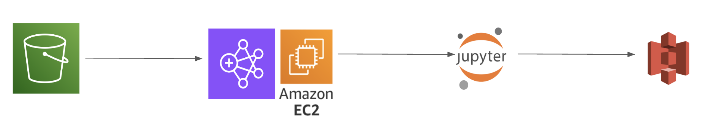
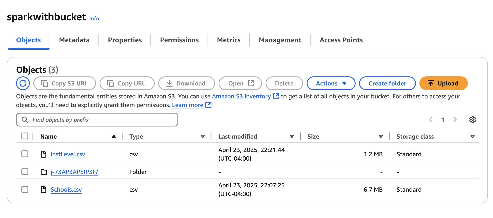
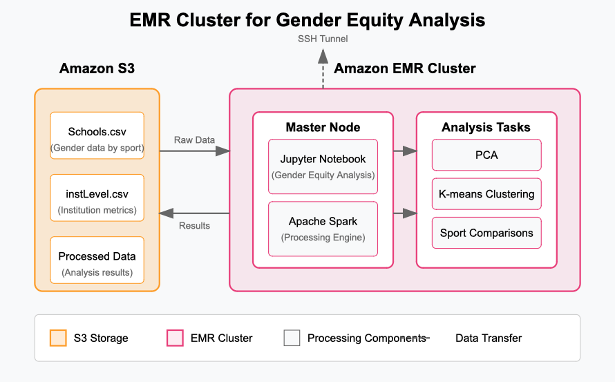
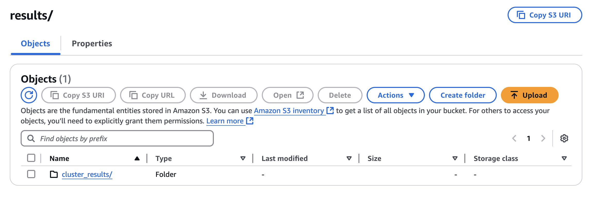

Data pipeline
Our analysis of gender equity in college sports required a robust data processing infrastructure to handle the EADA datasets. We implemented a cloud-based pipeline using AWS services to ensure scalability and reproducibility.
The EADA data contains multiple years of information across hundreds of institutions, with dozens of metrics for each sport and gender combination. This volume and complexity of data necessitated a solution beyond local computing resources. We selected AWS as our cloud provider due to its comprehensive suite of data processing services and strong integration capabilities.

STEP 1: Raw Data Upload to S3
We begin by storing our raw EADA CSV files in Amazon S3. These datasets contain critical gender equity indicators including team roster sizes, coaching staff compensation, recruitment expenses, and scholarship allocations.
Our Schools.csv file contains sport-specific data across institutions, including participation numbers and expenses separated by gender. The instLevel.csv file provides institution-wide metrics such as total athletics revenue and gender proportionality measurements. Both files contain sensitive financial information that benefits from S3’s security features, while remaining accessible for our gender equity analysis.

STEP 2: Cluster Setup with EMR
Analyzing gender disparities across hundreds of institutions and dozens of sports requires significant computing power, especially for our unsupervised learning approach. We launched an Amazon EMR cluster to handle the dimensionality reduction and clustering analyses needed to identify patterns in athletic department spending and participation across genders. Our EMR environment included Spark for distributed processing of the equity metrics and Jupyter for interactive analysis. While a single-node cluster proved sufficient for our initial investigation into gender gaps in basketball and track programs, EMR’s scalability would accommodate future analyses of all NCAA sports across multiple divisions and years—expanding our understanding of gender equity trends. 
STEP 03: Launch Jupyter on EMR using SSH
Once the EMR cluster is active, we SSH into the EC2 Master node and manually start a Jupyter Notebook server on it. This gives us a familiar, browser-based Python environment where we can fetch data from S3, run our analysis, and visualize the output. This step requires setting up SSH tunneling so that we can access the notebook from our local browser securely.
STEP 04: Load & Analyze Data
In the notebook, we use boto3 to connect to S3 and load our datasets into Pandas for analysis. We then run exploratory data analysis (EDA), correlation checks, visualizations, and prepare our results for export. Detailed analysis will be dicussed in the next section

After completing our analytical transformations, the processed gender equity datasets are stored back in our S3 bucket in a structured format. By returning these processed datasets to S3, we maintain a complete data lineage from raw EADA submissions to final analytical outputs. This approach ensures reproducibility and allows team members to access the processed data through various tools, including direct connections from R for the visualization work presented in our exploratory and unsupervised learning sections. The S3 storage also facilitates version control as we refine our equity analyses over time, enabling us to track changes in gender disparities across multiple academic years of athletic department operations.